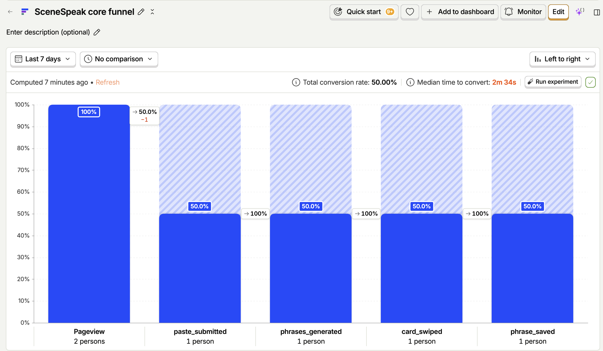

Living PRD (Product Requirements Document)
Updated every week as we test with real users and learn what works.
1. Target User & The Job to Be Done
Who is this for? Non-native English speakers who already handle everyday conversation, but now study or work in professional or academic settings. They want to sound polished and credible, so people judge their ideas, not their English. We start with first-year international graduate students (I am user #1).
The painful "Before" workflow: They come across useful phrases every day in readings, slides, lectures or podcasts. They copy them into a translator one by one, get a word-for-word meaning with no context, and forget them a day later. Nobody checks whether they can actually use them. Even when they know what they want to say, it comes out simple or awkward, so they sound less capable than they are.
The "After" workflow with this product: In one sitting: paste today's text or transcript, get 5–10 useful phrases, each with a simple English explanation and a short real-life scenario dialogue (class discussion, coffee chat, team meeting), write your own sentence and get feedback, then save the phrases to your phrasebook.
2. Scope & Explicit Non-Goals
- In Scope (Core Workflow): Paste text or a transcript from your daily life (a reading, lecture, podcast, or panel) → key phrases explained in simple English with a scenario dialogue → practice sentence with feedback → saved phrasebook.
- Out of Scope #1: Voice and pronunciation scoring.
- Out of Scope #2: Community or social features.
- Out of Scope #3: Recording or transcribing audio inside the app (v1 takes pasted text or transcripts).
Key product flow
Learn
- Key phrasesUseful & new to you
- Understand in a sceneMeaning + real dialogue
Output
- ShadowListen and repeat aloud
- Your turnRole-play in a new scene
- Feedback & reviewUsed it correctly? If not, retry
- Phrase selection: "useful and new to you", not just "most common". This is our riskiest assumption.
- Feedback includes a retry loop: learning happens when you fix a mistake.
- Review brings users back next week (our success metric).
3. How It Works Under the Hood & Riskiest Assumption (Week 2+)
Riskiest Assumption: AI-picked phrases and scenario dialogues may feel generic rather than useful and natural to real learners. Success looks like: 3 classmates each use it on real class text and correctly use at least 3 new phrases in their own sentences, and say they would use it again next week.
How Build 2 tests it: I paste 3 real texts from my own classes (a reading, a lecture transcript, a podcast) and check whether at least 5 phrases per text are ones I would actually use.
Simple Architecture: Build 3: browser page (app/index.html) → small Node server (server.js, hosted on Render's free tier; it keeps the API key in Render's environment variables and rate-limits each IP) → OpenRouter AI model → up to 8 key phrases returned as JSON → shown one card at a time. Practice: the learner's reply goes to POST /api/feedback → the same AI model → short feedback. Analytics: PostHog records pageviews, clicks, and 6 custom events, with session replays that mask all user text. The phrasebook and the known list are stored in the browser's localStorage (no database).
4. Unit Economics & Analytics Snapshot (Updated Weekly)
Cumulative Build Spend
≈ $0.01
About 35 AI calls, ~33K tokens, measured on OpenRouter. The API key has a $2 hard cap. Hosting: $0 (Render free tier).
Cost Per Run
≈ $0.0004
Find phrases: 397 input / 914 output tokens. Practice check ≈ $0.00005 (about 260 input / 70 output tokens). Measured with the current prompt.
User Evidence (Analytics, updated Build 3)
6 custom events
PostHog live: pageviews, clicks, paste_submitted, phrases_generated, feedback_checked, card_swiped, review_finished, phrase_saved (new in Build 3). Session replays mask all user text.
Sponsor Call (Week 6)
TBD
Cost Guardrails
- $2 credit limit on the API key
- A cheap model
- Pasted text capped at ~3,000 words
- Capped output length
- No automatic retries
- Per-IP rate limit: 20 phrase requests and 40 feedback checks per 10 minutes (429 beyond that)
- Token count and cost logged for every call
PRD v3 (Build 3: go live + security)
- Core metric: save rate =
phrase_saved ÷ cards shown (are the AI's picks useful?)
- Funnel: Pageview →
paste_submitted → phrases_generated → card_swiped → phrase_saved
- Hosting: live at scenespeak-svse.onrender.com on Render's free Web Service (
node server.js, no packages). The API key is a Render environment variable, never in Git.
- Security: per-IP rate limit (20 phrase requests and 40 feedback checks per 10 minutes), JSON-only API calls, security headers, request timeouts. No secrets in the repo or Git history; no database or accounts. Remaining: a spread-out attacker is only capped by the $2 key limit, and the limiter lives in memory (resets on restart). Full audit: SECURITY.md.
- Known issues: occasional 502 on the first AI call → add a retry or a clearer error in Build 4; the free tier sleeps when idle (first request can take about a minute);
HEAD / returns 404 → fix in Build 4 (matters for uptime monitors)
Roadmap
- Build 2 (shipped): AI phrase detection, AI practice feedback, card-by-card swipe review, PostHog analytics.
- Build 3 (shipped): Live on Render (free tier), per-IP rate limit and security audit, PostHog funnel and
phrase_saved event.
- Build 4: Send the known list so the AI skips phrases you already know, an Undo button after swiping, a retry or clearer error for the 502, making
HEAD / return 200 instead of 404, PDF and blog-link input, plus evals.
- Build 5: Cloud launch and scene practice.
- Later: Voice conversation (highest cost).
Weekly Build Log
Build on at least two separate days each week outside class, including the November 3 break. Push commits and log actual progress, failures, PRD changes, costs, and hours here. All build deadlines are noon, New York time.
Build 1 · Intent.md & Throwaway Prototype (Due Nov 9)
- What shipped: A clickable local prototype with sample data (no AI yet) showing the full loop: key phrases → scene with read-aloud → "your turn" reply → phrasebook. Plus PRD v1 and a demo GIF.
- Things learned with AI: Finishing the setup guide was a big unlock for me as a PM: I can now build small things on my own and focus on the product.
- What broke / changed in PRD: npm install failed with "permission denied". Claude said this is a common Mac issue, so we pointed npm to a folder in my home directory instead of using sudo. PRD: renamed to SceneSpeak and added a learning method + roadmap.
- Cost & time this week: $0 · 4 hours
Build 2 · Smallest Local Version & PostHog (Due Nov 16)
- What shipped: A working local app with real AI. Paste any text →
server.js calls OpenRouter (Gemini 2.5 Flash Lite) → 5–8 key phrase cards, each with a meaning, the original sentence, and a scene. I also shipped real AI practice feedback (reply in a new scene, get feedback, retry up to 5 times), card-by-card swipe review (← Got it hides a phrase for good, Save → adds it to the phrasebook), PostHog on this page and the app (pageviews, clicks, 5 custom events, masked replays), PRD v2 with measured costs, and setup steps in AGENTS.md.
- Riskiest assumption, first evidence: Most phrases were useful (e.g. "scope creep", "get buy-in", "stepping on anyone's toes"), but the AI also picked weak ones like "stalls" and "go after". So I capped results at 8 phrases (quality over quantity) and added swipes: the share of "Save" swipes in PostHog will show how useful the picks really are.
- What broke / changed in PRD: (1) A short text failed with "the answer may have been cut off". It wasn't length: the model sometimes wrapped its JSON in extra characters. We now strip them, log the raw answer and finish_reason, and show honest error messages. (2) Old results stayed on screen after an error; now they clear. (3) The agent wanted to turn PostHog autocapture off for privacy, but Build 2 needs click data, so we kept it on with all text masked. PRD: new architecture, measured costs, cost guardrails, and the swipe review moved into Build 2.
- Cost & time this week: $0.006 in AI calls (26 calls, 21.1K tokens; $2 hard cap on the key) · about 3 hours
Build 3 · Go Live & Security Audit (Due Nov 23)
- What shipped: SceneSpeak is live at scenespeak-svse.onrender.com, deployed on Render's free Web Service tier (Beginner lane; commit
50bde8b, TRUST_PROXY=1). Before going public I added a per-IP rate limit to /api/phrases (20 per 10 minutes) and /api/feedback (40 per 10 minutes) that returns a 429 with a friendly message, and hardened the server: JSON-only API calls, security headers, request timeouts, and a real 413 for oversized pastes. The API key lives in Render's environment variables, not in Git. I also wrote SECURITY.md and added "Shipping" and "Ask me first" sections to AGENTS.md.
- Also shipped: A full PostHog funnel for the core workflow: Pageview →
paste_submitted → phrases_generated → card_swiped → phrase_saved, with a new phrase_saved event (numbers only, no phrase text). I made that change the Week 3 way: branch build-3 → PR #1 with what changed / why / what could break / how checked → manual browser test → merge. AGENTS.md rule 7 (added after the agent tried to turn off PostHog autocapture in Build 2): don't disable autocapture, session recording, or masking without asking.
- Live check: The live 429 test passed: 400 ×19, then 429 from request #20 (one earlier request in the window was my phone test),
Retry-After 568s, friendly message shown. Phone test on the live app: it worked (pasted, generated, swiped and saved). Cross-network check: I then used the app from my phone on cellular data while my laptop's IP was still rate-limited, and it worked (pasted, generated, swiped and saved), so the limit is per visitor.
- First evidence: In my own test session I saved 4 of 7 cards (57% save rate). The funnel shows tracking works end to end (median 2m 34s from page view to save), but both "persons" are me testing, so this isn't user evidence yet.
- What broke / changed in PRD: (1) The first
/api/phrases call returned a 502 and worked on retry; not caused by these changes, logged as a Build 4 fix. (2) Trying to break the app found and fixed: no rate limit, any Content-Type accepted on the API routes, oversized pastes dropped the connection instead of showing the "too long" message, and no security headers or timeouts. No real secrets were in the repo or Git history, and .env is gitignored. (3) The agent's first PR edit left broken backslashes in the description; it caught and fixed them. (4) HEAD / returns 404; logged as a Build 4 fix. PRD v3: added hosting, security, the funnel, and save rate as the core success metric.
- Cost & time this week: ~$0.004 in AI calls (~9 calls, ~11.8K tokens; about $0.01 cumulative; $2 hard cap on the key) · $0 hosting (Render free tier) · about 2 hours

PostHog core funnel from my own two test sessions (not user data).
Build 4 · Test.py: Choose Track A or Track B (Due Nov 30)
- Chosen track: [A: 10-case domain eval and one outside target-user review; OR B: 3–5 outside users and replay findings]
- Results and improvements: [Before/after evidence; for Track B, fixes to the top three friction points]
- PRD v4 changes: [What the evidence changed]
- Cost & time this week: $[0.00] · [0] hours
Build 5 · Ship.installer: Launch Ops, Rollback Check & 2-Min Video (Due Dec 7)
- Launch Ops & Safety: [Verified no exposed keys, set spend cap, tested 2-minute rollback]
- 2-Minute Video & Final Polish: [Link/embed above]
- Cost & time this week: $[0.00] · [0] hours